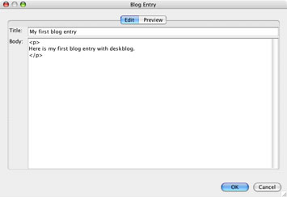

|
A blog entry is typically something like a short article, piece of news, insight, abstract, opinion and so on. From a technical perspective, blog entries in Pebble are just short pieces of HTML that represent the content that you wish to display. This can be anything from a simple piece of text to an elaborate collection of text, images, tables, etc. In addition to this, Pebble stores other pieces of information alongside your blog entries such as a title, the date/time of publication and author.
Adding a Blog Entry
To add a new blog entry, choose New Blog Entry... from the File menu. In this popup window, just fill in the title and main body of the entry. When you've finished writing the entry, clicking the Preview tab will show you what your new entry will look like. If necessary, you can make further changes and preview them.
When you're happy with the entry, click the OK button.
The body of a blog entry is just a XHTML/HTML fragment, meaning that you can use any XHTML/HTML tags you like for markup and formatting. Common examples include using bold and italics. Also, you can include other elements such as hyperlinks and images.
For convenience when posting code and HTML fragments you can enclose these within <escape> and </escape> tags. In doing so, any < or > characters will be automatically escaped to < and > respectively.
Editing a Blog Entry
Blog entries can be edited at any time after they have been posted. To edit an entry, double-click the appropriate blog entry in the main table. This opens the same window used to add a new entry, and you can again edit, preview and click OK when finished.
Removing a Blog Entry
Existing blog entries can also be removed at any time. To remove an entry, choose Delete from the File menu after highlighting the entry that you would like to delete. This will open a popup window asking you to confirm your action.
|